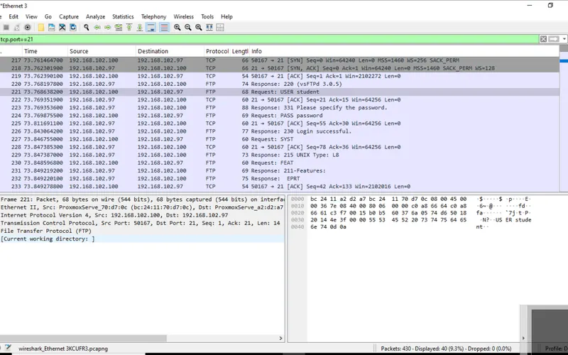

Protocol capture & analysis
Captured and dissected DNS lookups, the TCP three-way handshake, ICMP echoes, and ARP requests in a virtualized lab. Then ran a telnet session and captured the credentials in plaintext before replacing the service with OpenSSH and proving the difference on the wire.